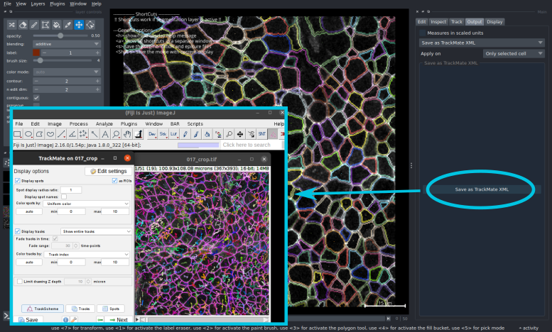
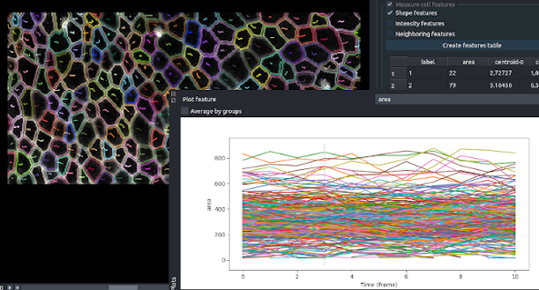
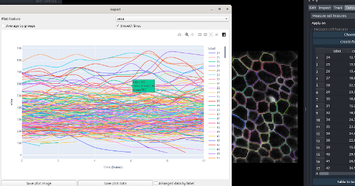
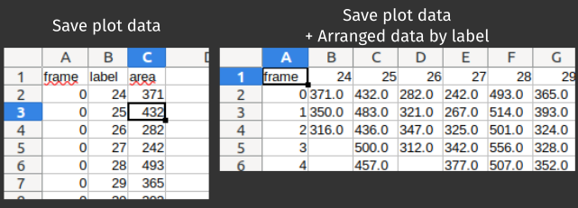
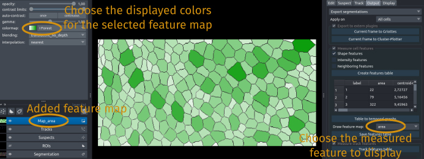
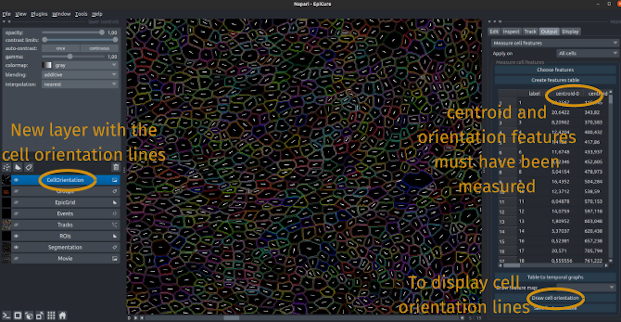
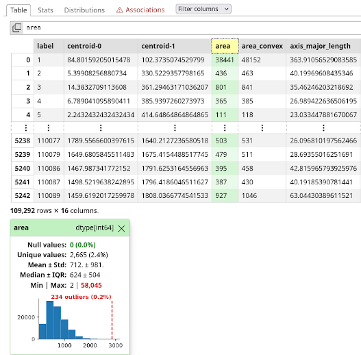
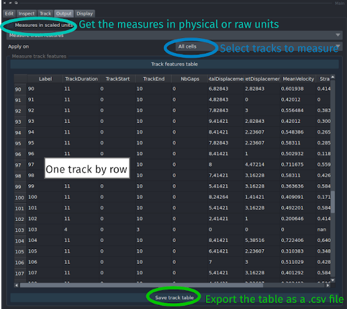
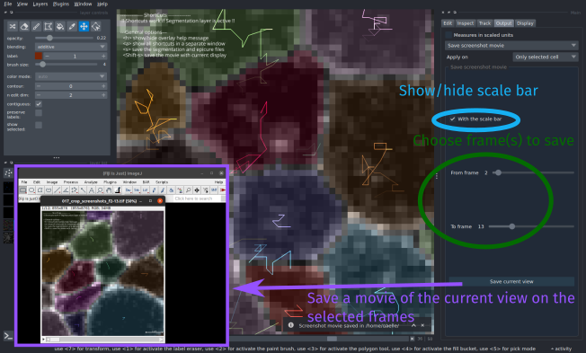
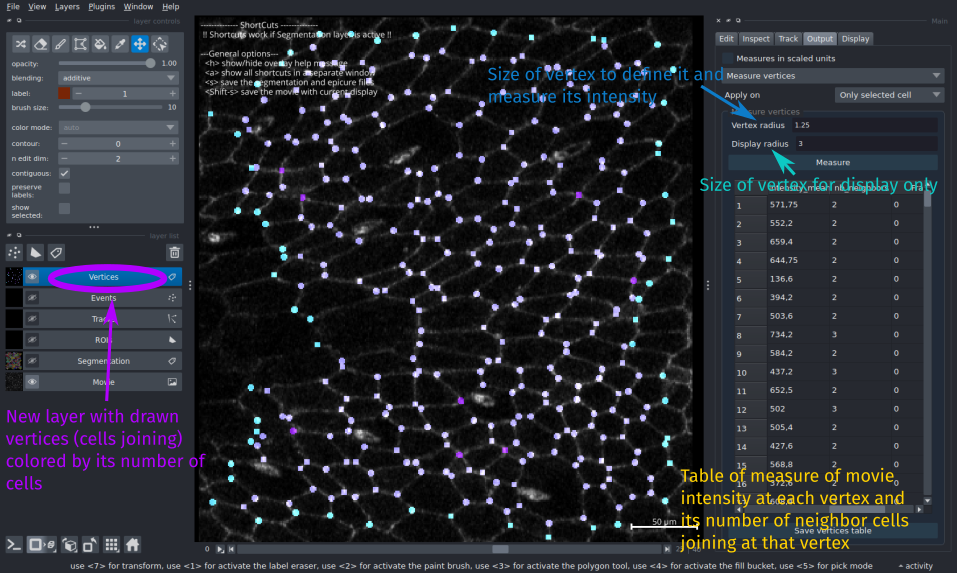

Output
Options to measure and export segmentation/events/tracks
Measurement and plotting options are/will be proposed here, as well as options to export the segmentation/measurements to use in other analysis softwares
Define current selection
You can choose which cells to analyse/export with the Apply on option in the interface:
Only selected cellwill measure/export only the currently selected label/cell. Its value can be seen and modified in the left panel underlabel. You can selectshow selectedoption in that panel to see only this cell.GroupNamewill measure/export all the cells in the corresponding Group (that have beend defined with theEdit>Groupoptions. To see which cells are in the group, you can select the optionsee group cellsin theEdit>Grouppanel of Epicure.All cellswill measure/export all the cells in theSegmentationlayer.
Save As
Export to TrackMate
The corrected segmentation/tracking can be exported as a TrackMate .xml file that can be directly loadded into TrackMate in Fiji as for any other TrackMate file.
Select the option Save as... and click on the Save as TrackMate XML to create this file.
Segmentation, tracking and divisions will be exported in the correct TrackMate format.
You can then load it in Fiji with TrackMate>Load a TrackMate file and selecting the created imagename.xml file in epics folder. Don't move it or the input image to be sure that TrackMate will load them correctly.

Image with swapped Z and T
In some cases, the image dimensions are not correctly set, and the temporal dimension is set as a Z-axis dimension. EpiCure should handle this case and print a warning on opening this image, but if you load the file with TrackMate from the exported .xml it's possible that the image dimensions will be uncorrect. In that case, all the segmentations will be overlaid on the first image. Then in Fiji you should swap them to have a temporal axis (frames) and not a Z axis (slices).
Export as GEFF
To export the tracking data in a format compatible with most tracking tool, you can use the export as GEFF option. GEFF (Graph Exchange File Format) is a specification for tracking data format, integrated in most bioimage analysis tracking tools.
Select the option Save as... and click on the Save as GEFF to create this folder.
Tracking and divisions will be exported in the correct GEFF format.
The segmentation information is included in the imagename_labels.tif that is saved in EpiCure in the epics folder.
The GEFF output folder, also placed in the epics folder should stay in the same place as this label images to keep the segmentation information.
GEFF folder can be imported in EpiCure in the starting interface by selected the GEFF folder linked to the raw movie in the starting interface line dedicated to GEFF segmentations.
Save segmentations
The curated segmented and tracked file can be exported in several formats to be used directly in other softwares/pipelines.
Click on the check box on top of the export segmentation panel to remove it when you don't need it anymore.
ROI export
The button Save ROI(s) allows to export the segmentation as Fiji ROIs. It will export only the selected set of cells (the selected cell, the checked cells or all the cells). In all cases, it creates a ROI file for each cell, containing the contour of the cell at all time frames where it is present. The file(s) are saved in the output folder, named *imagename*_cell_*celllabel*.zip, for each cell.
Save segmentation
The button Save segmentation(s) allows to save the label image of the segmented cell(s) depending on the selection (only the selected cell, cells in a given group or all the cells).
Save skeleton
Allows to save the skeleton: the binary of the junctions, of the current selection (only selected cells, cells of a given group, or all cells). The file will be saved in the output folder. The skeleton can also be displayed by pressing k when the segmentation layer is active.
Export events
Export events (in the Inspect onglet) to use in extern plugins/softwares as Fiji.
You can choose which type of events to export (suspect events, divisions, extrusions...). For this click the Choose events button and select the event types to export. Each type of event will be exported separately.
Then choose the type of format to export the event.
Currently, only Fiji ROI is proposed. It will save the list of events as Fiji point ROI in a .zip file which can be open in Fiji through the ROI Manager. This export format is also compatible with DeXtrusion so that EpiCure can be used to create a training dataset for DeXtrusion.
Export to other plugins
The output of EpiCure are also compatible with other Napari plugins, and this panel allows you to communicate directly with those plugins. It will open a new Napari window, with the corresponding plugin launched, and the necessary layer. You need to have these plugins already installed in Napari, or install them in the Plugins panel of Napari.
Currently, we propose direct export to:
- Griotte Napari plugin that allows to visualize/export the connectivity graphs between the cells.
- Cluster-Plotter Napari plugin that allows to cluster objects based on their properties and interactive visualisation of the results.
Measure cell features
Features selection
You can choose which features will be measured and displayed in the table. For this, click on the button Choose features in the panel. A window will pop-up with the list of available features. Check the ones to measure.
If features that relies on intensity are checked, you can choose on which channel(s) you want to do the measurement. For example, if the movie has two channels (the junction and another staining), you can select both to measure the intensity of the cell in both channels. For this select, the desired channels in the displayed list.
Note that if you save the current settings (see Preferences), the selected features will be also saved as default features.
Features table
The feature table contains measurement of cell properties based on the segmentation. The table will be created/updated when clicking on the Create features table button.
If you click on one value in the table, it will show the corresponding cell at the corresponding time frame. The table can be sorted by a given column by clicking on the column name.
Temporal graph
Table to temporal graph button opens a new panel to choose a feature to analyse temporally. With this option, you can display a graph of the evolution of the value of a measured feature in time. The individual curves of each cell will be displayed. If you have created Groups, you can also display the average value by Group.
A dotted vertical line in this panel indicates at which frame you are currently in the main Napari panel in the displayed layers. If you move the current frame in the main Napari interface, the vertical line will move accordingly.

Starting from version 0.2.6, temporal plots rely on plotly python library instead of matplotlib previously. This allows for more interactivity as you can zoom in/out, hover with the mouse on the curves to see the current value, select label(s) to display. However, the display is very slow for a large amount of lines to plot (if there are more than 2000 labels/cells). For simplicity, EpiCure will only display a random subset of the labels when this is the case but if you save the plot data, all data will be saved.

Saving temporal plot
You can save either the current plot image by clicking the save plot image button, or the raw values used to do the plot (the x and y values, as a .csv file) with the save plot data button. By default, the data are saved with one row by value (each row one label, one frame and the corresponding value of the plotted feature).
To save instead the data with one column for each label, select the option Arranged data by label in the bottom right of the plot interface (option available from EpiCure 0.2.6).

Feature map
Each measured feature (in the table) can also be displayed as a colored map, where each cell is colored by the value of this feature.
For this, select the feature to map in the Draw feature map interface, and a new layer will be added in the list of layers on the left panel of Napari. You can change the colormap colors in the top-left panel of Napari by selecting this layer, and then use the colormap option.

Draw orientation
To draw each cell main orientation, click the button Draw cell orientation.
You must have measured the cell features before, and selected at least the centroid and orientation features.
If you also selected the eccentricity feature, the drawn line length will reflect the cell orientation strength (the eccentricity). Otherwise, the cell orientation line will be the same length for all cells.
This option will add a layer CellOrientation that contains the drawn lines of each cell orientation (main axis).

Statistiques table
Once the table has been calculated, you can interactively look at the statistical distribution of the selected features with this option.
It uses the skrub module that should be installed in your virtual environment to use it pip install skrub.
This option will open an html page that contains the table and statistics for each column. You can click on the column/case to have more information on the distribution of the selected feature. The onglet Association in the html page gives information on the co-dependency of features.
 Be careful that these statistics are only exploratory and do not take into account the dependencies between data (temporal dependencies for a cell with the same label, cell from the same lineage...).
Be careful that these statistics are only exploratory and do not take into account the dependencies between data (temporal dependencies for a cell with the same label, cell from the same lineage...).

Measure track features
Select "Measure track features" in Output onglet
This option allows you to measure and export track related features, as the track length, mean area of the cell along the track...
Check the option Measures in scaled units to have the results converted in physcial units (µm, min...) or leave it unchecked to have the measures in pixel and frame units.
Select the track that you want to measure with the Apply on parameter: only the currently selected cells, all cells or a specific cell group.
Click on Track features table to perform the analysis and display a table with the measured features of each track.

EpiCure measures standard track/trajectory characteristic and output them in the table, with one row being one track and one column a feature. Here we list the track features currently proposed in EpiCure.
If you need to measure a feature that is not yet present in this list, you can of course export the raw cell data and measure it in an external program, or add directly the option within EpiCure code and do a pull request to integrate it in the main distribution of EpiCure, or contact us to suggest for us to add it through opening an issue, or on the imagesc forum.
Track features
| Name | Description |
|---|---|
| Label | Label (indentifying number) of the cell/track that is measured in this row |
| TrackDuration | Total duration from the first time point to the last time point of the track |
| TrackStart | Time at which the track starts |
| TrackEnd | Last time point at which the track is present |
| NbGaps | If there are gaps in the track (frames between the first and last one that do not contain the cell), how many are there |
| TotalDisplacement | Total distance travelled by the cell in the whole track |
| NetDisplacement | Distance between the last point and the first point of the track |
| MeanVelocity | Speed of motion of the cell between consecutive frames, averaged over the whole track |
| Straightness | How straight is the trajectory: NetDisplacement/TotalDisplacement. A value of 1 means the track is linear (totally straight) while close to 0 the motion is very tortuous |
| Group | Group in which the cell Label is classified if any |
Save screenshot movie
This allows to save screenshots of the current display/current view (same part of the movie, same zoom...) for several consecutives frames.
Choose the first and last frame of the screenshot movie and click on save current view.
This will creates a .tif file in the epics folder containing the screenshots of the current view repeated on the given frames.

Measure vertices
Find the vertices, points of junction of several cells (Tri-Cellular junctions or more), display it and measure intensity of the raw movie channel and the number of cells joining (the connectivity) at each vertex.
Choose the option measure vertices to launch it.
The parameter vertex_radius set the radius of a vertex, to find it (depending on the resolution, it can be bigger than a single pixel) and to measure the intensity inside the vertex (you might want to measure in a small circle rather than in only one point).
The parameter vertex_display set the radius at which each point is displayed in the viewer.
Click on Measure to launch the detection of vertices and their measures. It can take a few minutes.
When it's finished, it will display a new layer, called "Vertices" that contained the defined vertices, colored by their connectivity measure (number of cells joining in this point) and of a size controlled by the vertex_display parameter (and not the one used for measurement, for clarity of visualization).
The measures of each vertex position, connectivity (nb of neighbor cell joining) and intensity in the raw movie channel (the junction channel) are displayed in a table in the right side of the interface that can be saved for further analysis on the vertices connectivity or intensity distributions.
